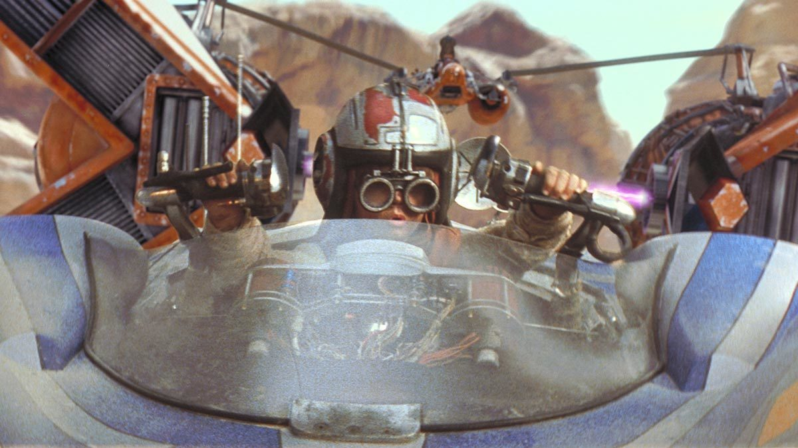
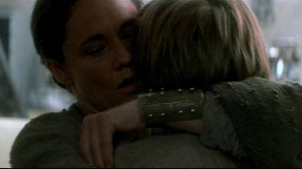
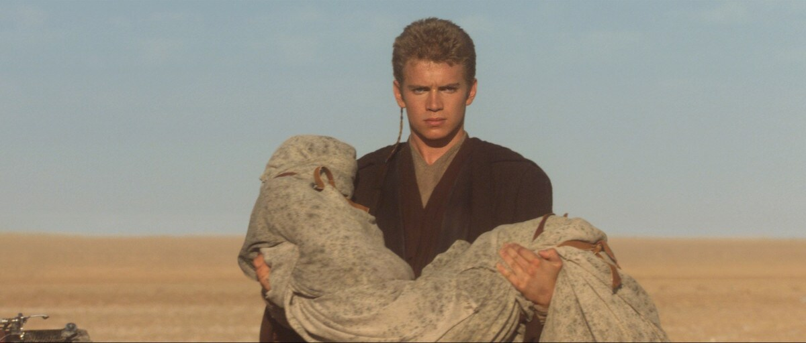
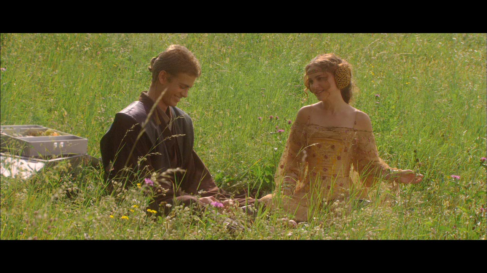
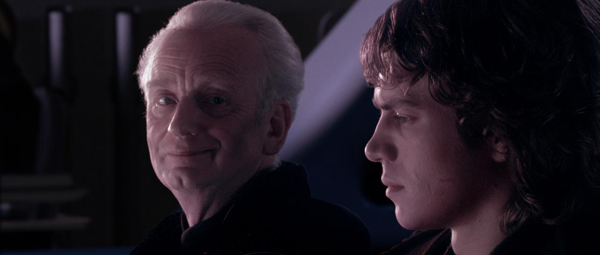
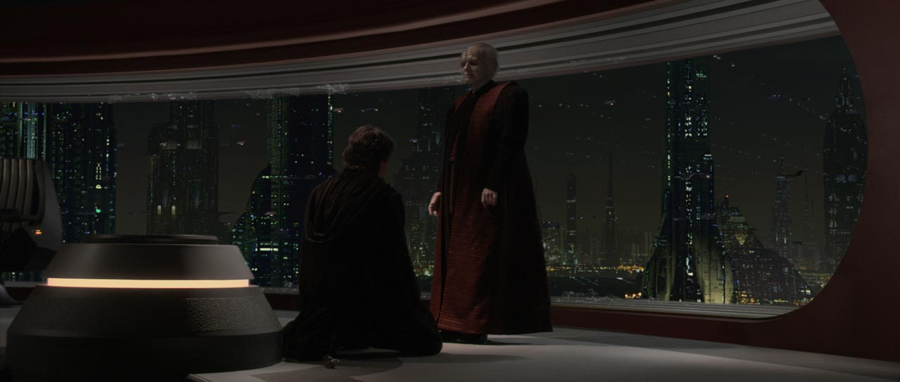
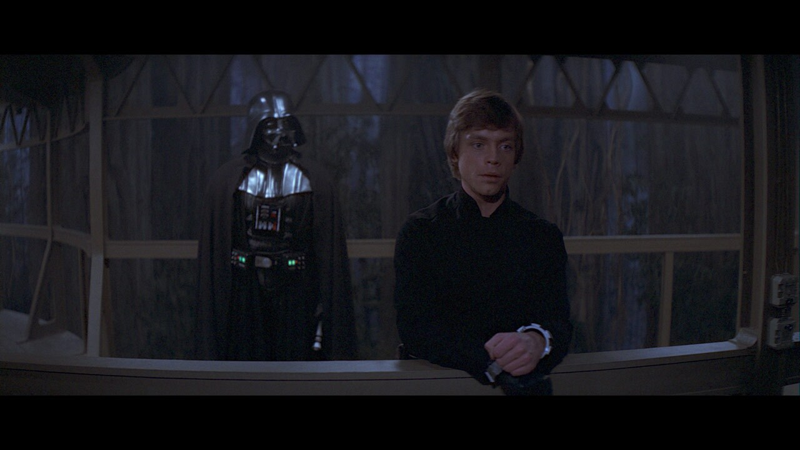

A maioria das pessoas enxerga Darth Vader apenas como um dos maiores vilões da história do cinema.
Mas Star Wars nunca foi apenas sobre o bem contra o mal.
A história de Anakin Skywalker é, na verdade, uma das maiores tragédias psicológicas da cultura pop.
"O medo de perder alguém foi exatamente o que fez Anakin perder tudo."
Uma Infância Marcada Pelo Trauma


Antes de se tornar Jedi, Anakin era apenas uma criança escravizada em Tatooine.
Ele cresceu sem pai, vivendo em um ambiente de violência, medo e falta de controle sobre a própria vida.
Sua única conexão emocional real era sua mãe, Shmi Skywalker.
🧠 As marcas emocionais de Anakin:
- Medo constante de abandono
- Ansiedade extrema
- Necessidade de controle
- Dependência emocional
- Dificuldade em lidar com perdas
Quando Qui-Gon Jinn leva Anakin para os Jedi, ele literalmente separa uma criança traumatizada da única pessoa que lhe dava segurança.
O Grande Erro da Ordem Jedi
Os Jedi enxergavam emoções intensas como um perigo.
O problema é que Anakin precisava justamente do contrário: apoio emocional.
Os Jedi ensinaram Anakin a esconder seus sentimentos... mas nunca ensinaram como lidar com eles.
Desde cedo, ele começou a desenvolver conflitos internos gigantescos.
Ele queria ser perfeito. Queria salvar todos. Queria impedir sofrimento.
Mas ao mesmo tempo, sentia raiva, medo e insegurança o tempo inteiro.
A Morte da Mãe Quebrou Anakin

O momento mais importante da transformação de Anakin acontece em Ataque dos Clones.
Ele encontra sua mãe sendo torturada pelos Tusken Raiders.
Mas chega tarde demais.
Ela morre em seus braços.
⚠️ O que nasce naquele momento:
- Ódio profundo
- Culpa extrema
- Trauma psicológico severo
- Obsessão por impedir novas perdas
A partir dali, Anakin passa a acreditar que poder absoluto é a única forma de impedir sofrimento.
É exatamente assim que muitos tiranos começam: tentando impedir a dor.
Padmé Não Era Apenas Amor

O relacionamento entre Anakin e Padmé sempre pareceu um romance proibido.
Mas emocionalmente, era muito mais complexo do que isso.
Padmé se tornou a estabilidade emocional que Anakin nunca teve.
O problema é que ele transforma esse amor em dependência emocional absoluta.
Ele não consegue imaginar a própria existência sem ela.
E quando começa a ter visões sobre sua morte, o medo toma conta completamente.
Palpatine Manipulou Tudo


Palpatine entendeu Anakin melhor do que os próprios Jedi.
Ele percebeu:
🩸 As fraquezas emocionais de Anakin:
- Medo da morte
- Necessidade de reconhecimento
- Raiva reprimida
- Sensação de abandono
- Desejo obsessivo de salvar Padmé
Enquanto os Jedi pediam desapego, Palpatine oferecia compreensão.
Mesmo sendo manipulação, Anakin sentia que finalmente alguém o entendia.
Darth Vader Não Matou Anakin
Durante anos, Vader dizia:
"Anakin Skywalker está morto."
Mas isso nunca foi verdade.
Darth Vader era apenas Anakin tentando enterrar sua culpa.
O traje, a máscara e a identidade Sith funcionavam quase como uma prisão psicológica.
Porque aceitar quem ele realmente era significava enfrentar:
💀 O peso da culpa:
- A destruição da Ordem Jedi
- A morte de crianças Jedi
- A queda da República
- A morte de Padmé
O Ódio Mantinha Vader Vivo

Após Mustafar, Vader vive em dor constante.
O corpo destruído, as queimaduras e as próteses o transformam literalmente em uma máquina.
E psicologicamente, ele também deixa de se enxergar como humano.
Vader se alimentava da própria dor porque era a única coisa que ainda o conectava ao mundo.
O lado sombrio não curava seu sofrimento.
Apenas o mantinha funcionando.
Luke Skywalker Salvou Anakin
O detalhe mais importante da trilogia original é que Luke faz algo que ninguém havia feito:
Ele acredita que ainda existe bondade em Vader.
Nem Obi-Wan. Nem Yoda. Nem os Jedi acreditavam mais nisso.
✨ O que Luke representa:
- Perdão
- Esperança
- Compaixão
- Reconexão emocional
Pela primeira vez em décadas, Anakin percebe que ainda pode escolher.
E é exatamente isso que destrói Darth Vader.
A Redenção Final de Anakin

Quando Vader salva Luke e destrói Palpatine, ele finalmente quebra o ciclo de medo que controlou toda sua vida.
Pela primeira vez, ele age não por medo de perder alguém... mas por amor verdadeiro.
O Escolhido não trouxe equilíbrio destruindo inimigos. Ele trouxe equilíbrio vencendo a si mesmo.
O Verdadeiro Significado de Darth Vader
Darth Vader representa algo muito humano:
🧠 O que a história realmente fala:
- Traumas não tratados
- Medo da perda
- Manipulação emocional
- Obssessão por controle
- Busca por redenção
Star Wars nunca foi apenas sobre espaço, sabres de luz ou batalhas galácticas.
A história de Anakin Skywalker é sobre como o medo pode destruir uma pessoa por dentro.
E como, mesmo depois de tudo, ainda pode existir redenção.
"Nenhum ser humano nasce Darth Vader."
Artigos Relacionados